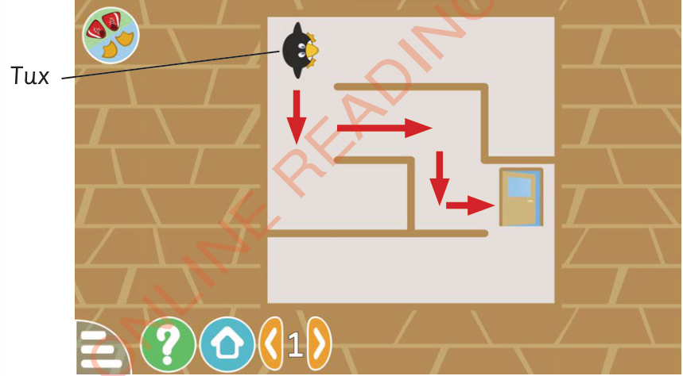

Requirements: Desktop computer, laptop, tablets or mobile phones installed with the game
Instructions
1.
Use the arrow buttons on your screen or swipe in the direction you want Tux to move.
2.
Your goal is to guide Tux out of the maze and reach the exit.Figure 2 shows a maze game.

Figure 2: Maze game
Note: You can try to escape the maze up to eight times.Each time, the maze will have a different layout.